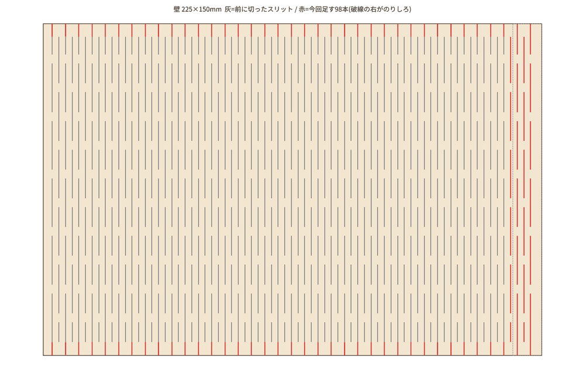
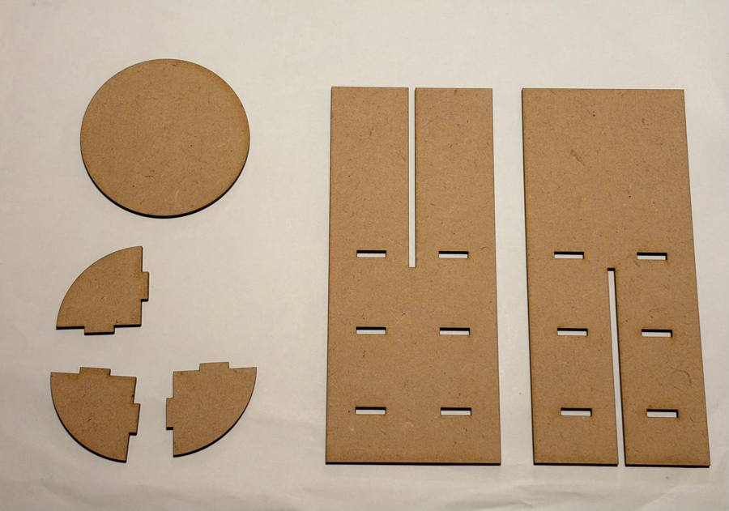
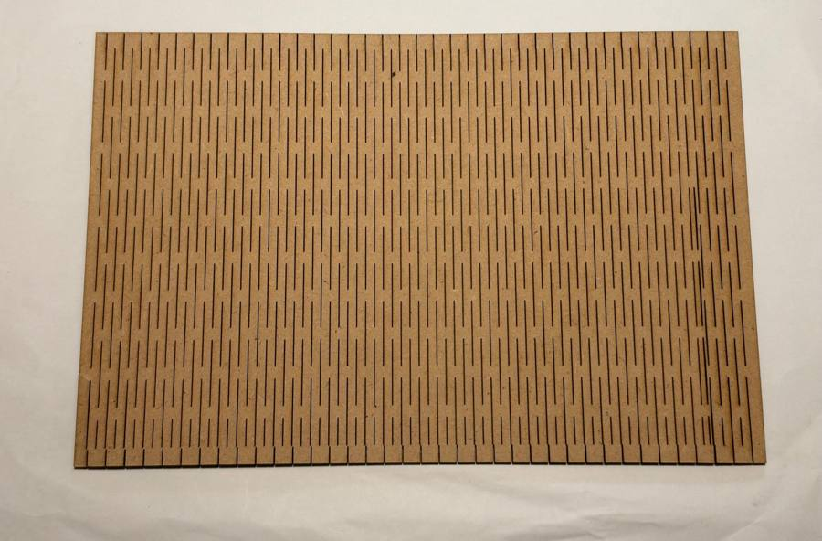
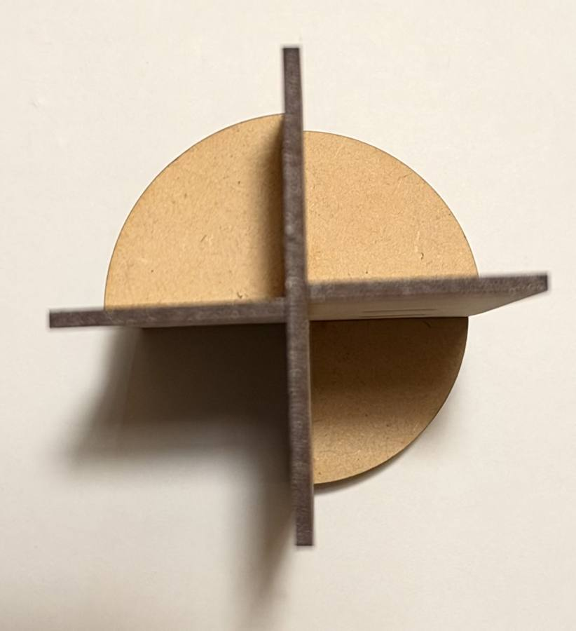
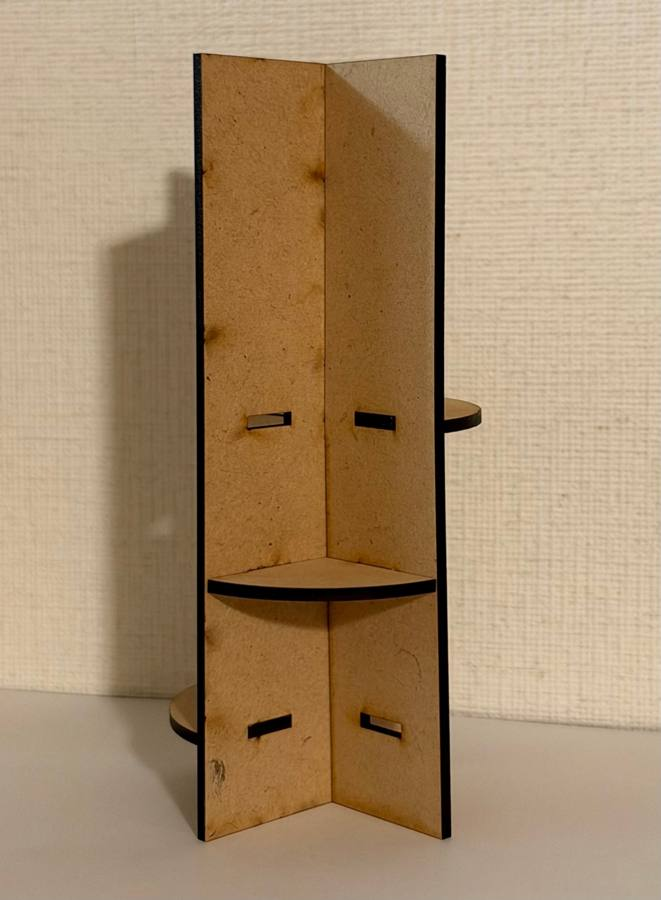
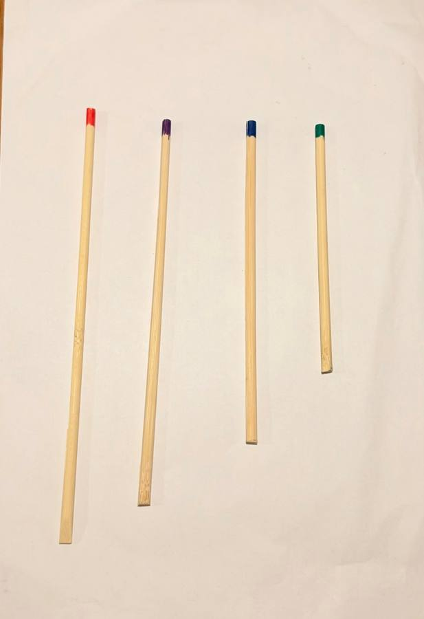
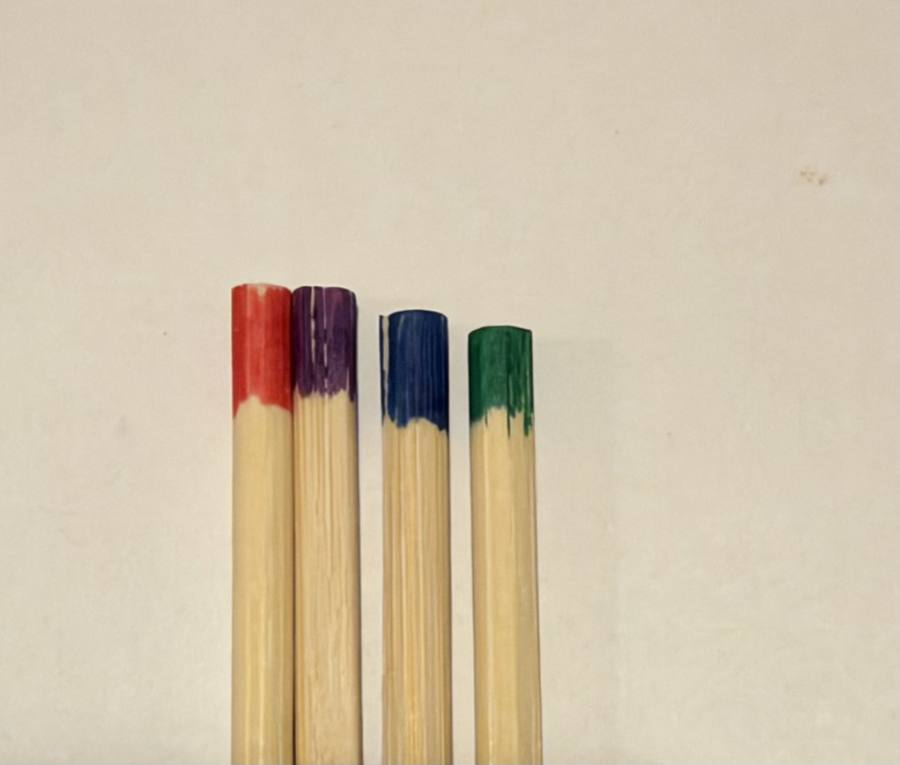

作品の説明
円筒形のコップの形をした箸立て。中を十字の仕切りで4つに分けて、区画ごとに床の高さを変えてある。
箸の長さを区画に合わせて変えると、箸のてっぺんが揃って、きれいにつかめる。
箸は、割り箸を切って作ったミニチュア。
今は箸がバラバラに入っていて、見た目も悪いし、同じ長さのペアを探すのが面倒くさい。
これを、見た目がきれいに揃って、すぐにペアで手に取れるようにしたい。
- 外径70mm、内径65mm、高さ150mm
- 床の高さ（底板の上から）：0mm、20mm、50mm、80mm
- 箸の長さ：20cm、18cm、15cm、12cm（縁から約50mm出る）
制作プロセス（調べたこと・試したこと）
材料
- MDF 2.5mm
- 1人に配られる板は、横225mm × 縦300mm（1枚の半分）。これ以上は使わない。
寸法の決め方
板の大きさから逆算した。板の下半分に壁（225 × 150mm）、上半分に仕切り板・床板・底の円を並べた。
- 壁：225 × 150mm。輪の長さが212mmで、残りの13mmがのりしろ
- 十字の仕切り板：幅64mm × 高さ147.5mm を2枚。上からスロットを入れる板と、下から入れる板
- 床板：半径31.8mmの扇形を3枚
- 底板：直径64.5mmの円
はめ込みの溝
板の厚さは2.5mmだが、溝を2.5mmぴったりにすると、ゆるくなってしまう。溝は2.45mmで設計した。
壁を曲げるスリット
壁は1枚の板に切り込み（スリット）を入れて、円筒に曲げる。

切り出した部品

壁（追加でカットしたあと）

仕切り板を組む


箸を作る
- 赤：20cm
- 紫：18cm
- 青：15cm
- 緑：12cm

